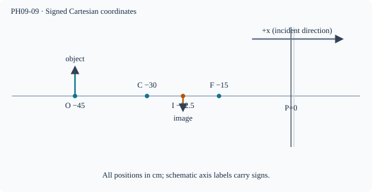

Prerequisite bridge
PH09-07, PH09-08
Before starting, identify the reference frame, directed rays, units and applicable geometric assumptions. Unbound prerequisites remain provisional.
Connected textbook foundation (preserved from PR #5)
10. Sign conventions are part of the scientific model
The mirror equation is not a magic unsignposted relation. Using a Cartesian coordinate positive to the right along the incident light, object distances in front of a mirror can be negative, and virtual image distances behind a convex mirror positive. A consistent convention also determines concave focal-length signs and magnification signs.
An algebraically obtained root must be tested against the physical domain: real versus virtual, front versus behind, and whether the assumed object location permits the reported image. This is the essence of many D3 MODEL tasks.
Cross-check: For the convex example, 1/12=1/8-1/24=3/24-1/24=2/24. The equation and geometry agree.
Build and check the model
Fix pole P=0, positive axis along incident rays left→right, and measure all distances from P. A real object has u<0; reflected real image in front has v<0; a virtual image behind has v>0. For paraxial spherical mirrors 1/f=1/u+1/v, and m=−v/u. A concave mirror has f<0, convex f>0. Algebraic results must be checked against ray geometry and assumptions.
Worked anchor
Concave f=−15 cm, u=−45 cm gives 1/v=−1/15+1/45=−2/45 so v=−22.5 cm; m=−0.5.
Condition and limiting check
The equation is a paraxial approximation; never use signed lens formula for a mirror.
Misconception repair
Signs are coordinate directions, not indicators that a distance magnitude is negative.
Reasoning diagram

Self-check before transfer
A concave mirror has u=−20 cm and v=−60 cm. Calculate f and m.
Check the reasoning
1/f=−1/20−1/60=−1/15, so f=−15 cm; m=−3, real inverted.
The next page contains fresh authored transfer, not an examination reproduction.
Source and figure status
Curriculum pointer CBSE10; candidate scope only. Preserved chapter manuscript. An original subtopic-specific SVG is attached above. Scientific figure and teaching-sufficiency reviews remain HOLD.